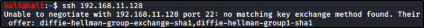

Enuemerating SSH
SSH:
Secure Shell Protocol to connect from a remote machine
We will try a connection, so we can (luckily) get info or a banner


Let's use SSH from a client to connect:


SSH, because of its old version, ask you for the Key Exchange option and suggest you some.
Use “-o” option with “KeyExchange” option set


After The Key Exchange option, ask for the cipher and suggest you some
Use “-c” to use the chosen cipher


Unfortunately, we got 0 info about SSH, except for NMAP